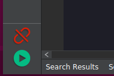

编辑并执行文件
1. MaixPy 内置了文件系统
支持 Flash 使用的 SPIFFS（目前不支持创建目录）， 默认分配了 3MB 给 SPIFF（从flash 0xD00000地址开始 3M）， 开机自动挂在到 /flash 目录下
也支持 FAT 格式的 SD （TF）卡 ，开机自动挂在到 /sd 目录下
需要注意的是， 根目录只是用来挂载 Flash 或者 SD 卡， 具体的文件在 /flash 或者 /sd 目录下
2. 为什么需要编辑并执行文件
在前面 点亮 LED 的实验中，我们直接在终端里面敲代码来一句一句执行，这样也简单方便，我们输入命令后会立即执行并及时得到返回的结果，这种交互方式称为 REPL（Read Eval Print Loop：交互式解释器）,
这种方式的好处就是简单方便，使用起来和 Linux 终端十分相似，只是使用的语法换成了 MaixPy（Micropython） 的语法。
但实际大多数情况下我们更想将脚本写到文件中，然后执行文件，这样我们不用每次都敲代码，减少了很多麻烦
3. 编辑并保存文件
3.1. 方法一： 使用内置编辑器 Micropython Editor(pye)
在 MaixPy 中， 我们内置了一款编开源编辑器 Micropython Editor(pye)
使用 os.listdir() 可以查看当前目录下的文件，
使用 pye("hello.py") 可以创建文件并进入编辑模式， 快捷键等使用说明可以在这里查看
比如我们写入代码
print("hello maixpy")
然后按 Ctrl+S 按 Enter 键保存， 按 Ctrl+Q 退出编辑
注意： 使用这款编辑器对使用的串口工具有一定要求， 必须将 BackSpace 按键设置为 DEL 功能， 否则按 BackSpace 调用的是 Ctrl+H 一样的功能（即字符替换）。
Linux 下推荐使用 minicom， 需要使用 sudo minicom -s 来设置，参考前面的教程
Windows 下也一样， 根据自己使用的工具上网搜设置方法， 比如 xshell 搜 xshell如何设置backspace为del 得到结果：
文件→属性→终端→键盘，
把delete和backspace序列改为 ASCII 127即可。
3.2. 方法二： 使用 MaixPy IDE
打开 MaixPy IDE， 连接开发板
编辑文件，然后在顶端Tool（工具）菜单中，点击将打开的文件保存为 boot.py 来将代码保存到开发板的boot.py文件，中，下次开发板开机上电会自动执行这个文件
当然也可以使用顶端Tool(工具)菜单中的发送文件功能来发送文件，会保存到开发板并且文件名和电脑上的文件名相同

3.3. 方法三： 使用工具 uPyLoader 读取到 PC（电脑） 上编辑后再保存到开发板
下载可执行文件:release

选择串口并点击 Connect 按钮来连接板子
第一次运行该软件需要初始化， 点击 File->Init transfer files 来完成初始化，这会在板子里创建两个文件，分别是 __upload.py 和 __download.py。
然后双机文件名即可打开文件并编辑，编辑完成后点击 save 来保存到开发板即可
3.4. 方法四： 使用工具 rshell 读取到 PC（电脑） 上编辑后再保存到开发板
按照 rshell 项目主页的说明安装好 rshell
sudo apt-get install python3-pip
sudo pip3 install rshell
rshell -p /dev/ttyUSB1 # 这里根据实际情况选择串口
编辑文件
ls /flash
edit /flash/boot.py
# 编辑器使用方法和 vim 一样
4. 执行文件
使用 os.chdir() 切换当前目录到文件的目录，比如 os.chdir("/flash")
4.1. 方法一： import
然后执行 import hello
即可看到输出 hello maixpy
使用此方法简单易用，但是需要注意的是， 目前 import 只能使用一次， 如果第二次 import， 则文件不会再执行， 如果需要多次执行，建议使用下面的方法
4.2. 方法二： exec()
使用 exec() 函数来执行
with open("hello.py") as f:
exec(f.read())
4.3. 方法三： 使用 MaixPy IDE 来执行
打开文件， 然后点击执行按钮来执行

4.4. 方法四： 使用 uPyLoader 来执行
连接好后选中文件， 点击 excute 按钮来执行文件
4.5. 方法五： 使用 ampy 来直接运行电脑上的文件
执行命令 ampy run file_in_PC.py 来执行位于电脑上的文件（文件不会保存到开发板）